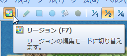

● 区域范围可以根据地图布局来设置
指定遭遇敌人队伍的区域。VA 中可以更详细地指定区域的范围。
 点选画面上方[区域]的图标切换成区域编辑模式。此时图块面板会显示出区域设置图块，以绘制图块的方法在地图预览中设定区域图块即可。
不同的区域使用区域 ID 区分，需要设置为同一区域时使用同一区域图块即可。
● 区域范围可以根据地图布局来设置

● 相同区域之间不一定要相连
 在[地图设置]里设置敌人队伍时，在[出现范围]里勾选[指定区域 ID]。
在底下的空格中填上指定的区域 ID，一次可以指定最多3个 ID。
在[地图设置]里设置敌人队伍时，在[出现范围]里勾选[指定区域 ID]。
在底下的空格中填上指定的区域 ID，一次可以指定最多3个 ID。
 VA 在乘船时也可以遭遇敌人。所以将海上设置为同一个区域，然后在敌人的出现范围里设置该区域 ID，就可以设置只有在海上才会遇到的敌人。
VA 在乘船时也可以遭遇敌人。所以将海上设置为同一个区域，然后在敌人的出现范围里设置该区域 ID，就可以设置只有在海上才会遇到的敌人。